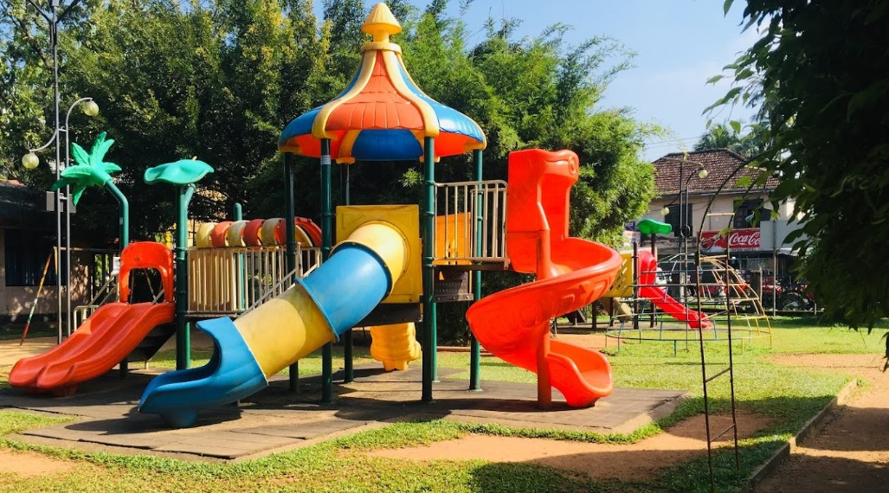
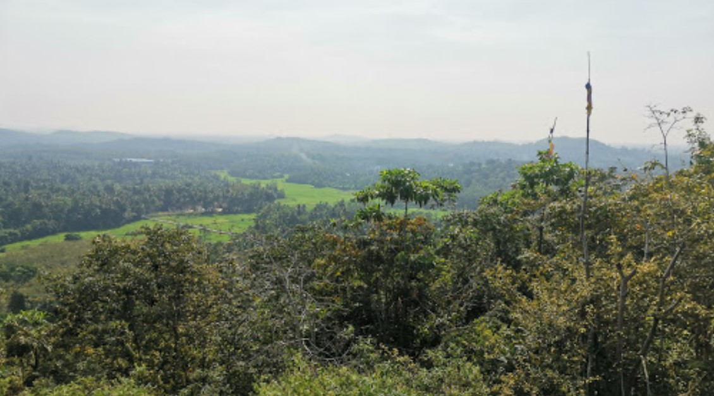
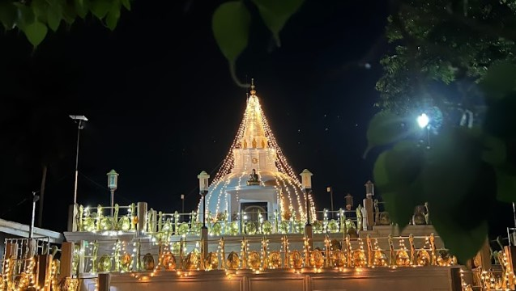
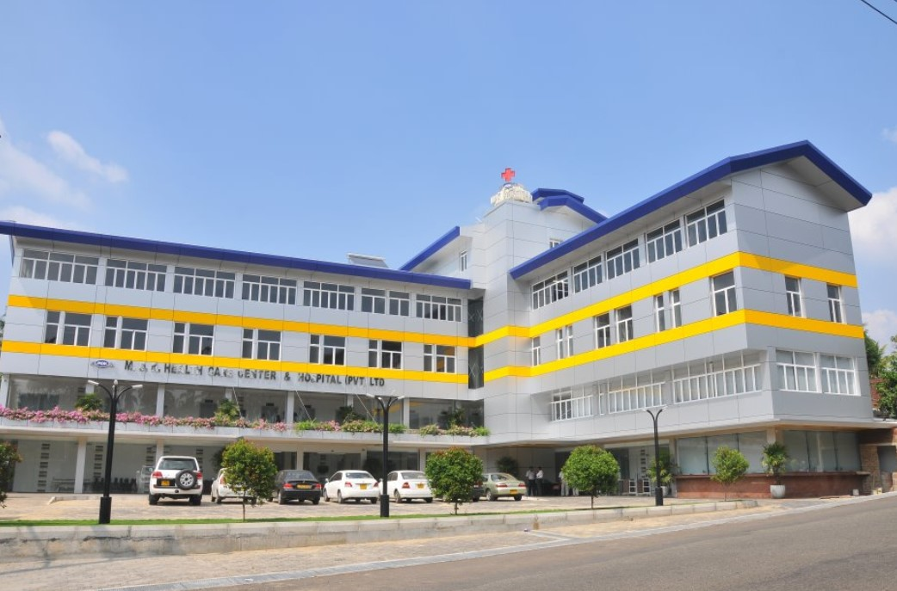
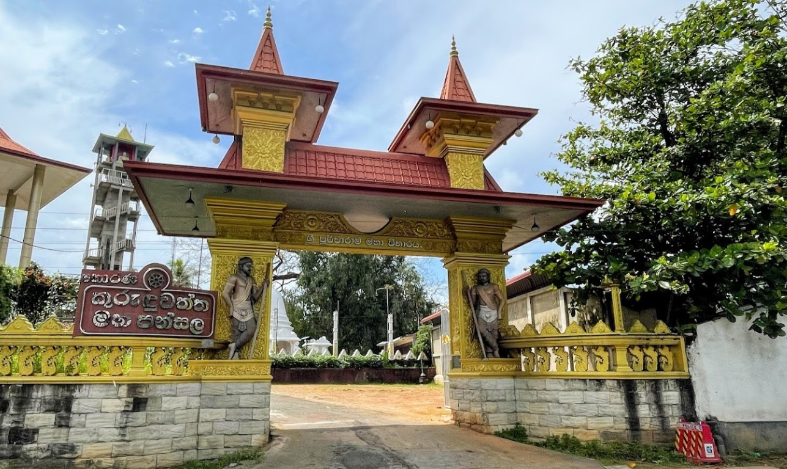

Children's Park
My hometown is HORANA. It is a town in the Kalutara District of the Western Province of Sri Lanka.

Narthanagala
There are many historical places such as, Horana Rajamaha Viharaya & Vanahami's cave on the hill of Horana Falls.

Mahameunawa Temple
Also my town has Wonderful ecological places such as, Horana Falls Mountain Waterfall and Feeder Area.

MDK Hospital
This town boasts scenic beauty, and its roads are well-connected, making it accessible for visitors.

Purwarama Temple